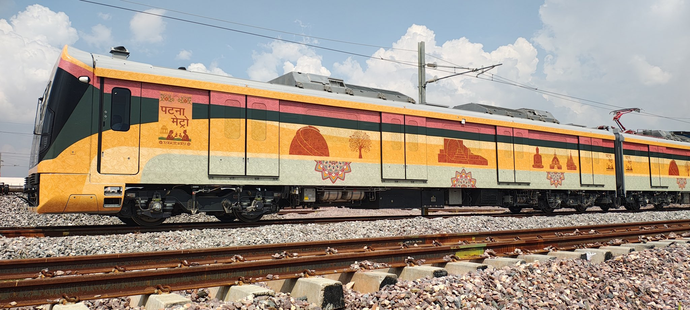
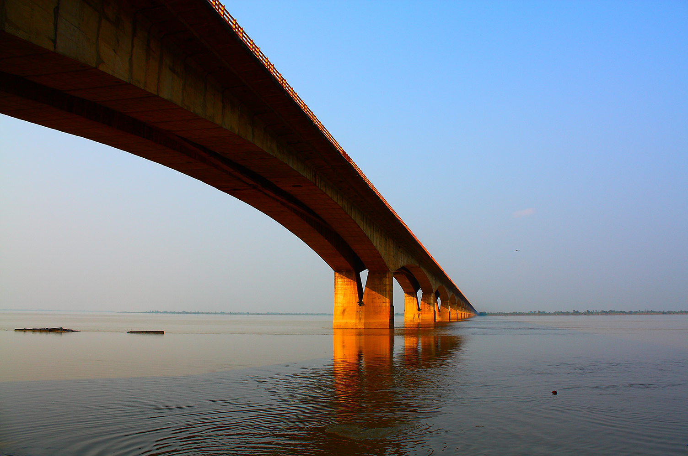
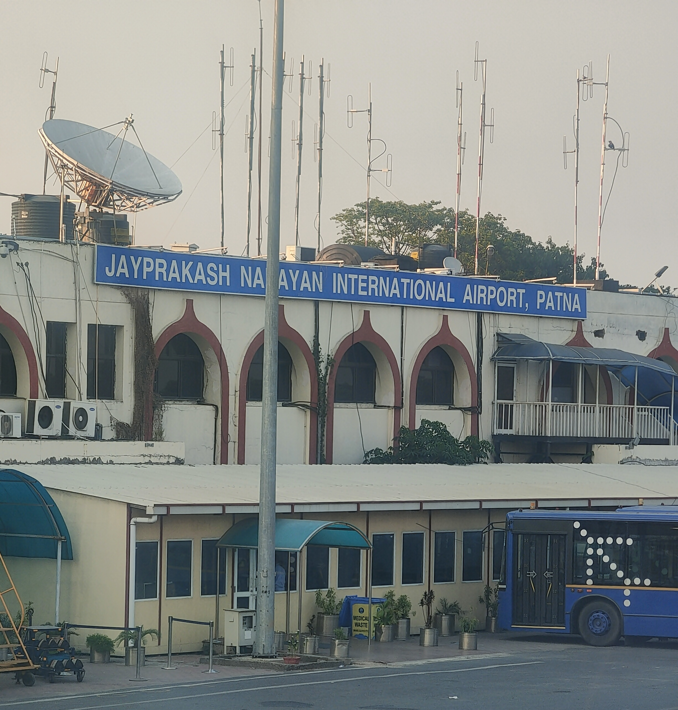

70th BPSC PYQBihar Budget data questions: The 70th BPSC asked "Which sector received the highest allocation in the Bihar Budget 2024-25?" (options: Health / Agriculture / Education / Infrastructure) and "Who presented the Bihar Budget 2024-25 in the State Assembly?" — BPSC tracks who holds the purse + where the money goes. For 2025-26, watch infrastructure/capital outlay claims (cross-link Topic #16).
71st BPSC PYQNational road-programme data: The 71st BPSC asked "Which state had the highest constructed road length under Bharatmala?"-pattern questions — highway construction statistics are a recurring BPSC bank. Bihar angle: NH-119D (Amas–Darbhanga), NH-31 (Aunta–Simaria, Bakhtiyarpur–Mokama) and the expressway pipeline.
70th BPSC PYQBihar economy one-liners: The 70th BPSC asked "What is the contribution of agriculture in the GDP of Bihar?" (17% / 19% / 26% / 33%) — Bihar's macro data points are fair game. The agri-economy hook for 2025-26: National Makhana Board (HQ Purnea), APEDA's first Bihar office and the NIFTEM announcement.
💡 Deep-dive ready: Every Ganga crossing in Bihar — MG Setu 1982 to Kacchi Dargah–Bidupur 2025, extra-dosed engineering explained, collapse sagas and the pipeline:
Ganga Bridges of Bihar Detail →
A. Patna Metro — Bihar's First Metro HOTTEST FACT
Priority corridor inaugurated 6 October 2025 by CM Nitish Kumar; passenger operations began the NEXT day, 7 October 2025 — the classic inauguration-vs-operations trap.
Malahipakri extension inaugurated 2 July 2026 — the newest in-window milestone (11 days before the exam window closes).
Operations: daily 8 AM–10 PM; trains every 20 minutes; fares ₹15–30 (pre-launch speculation of ₹10–50 was wrong); Phase-1 approved cost ~₹13,365 crore.
Significance: Bihar's first metro rail service — Patna joins India's metro club; executed under the Patna Metro Rail project (Phase-1, two corridors: Danapur–Khemnichak and Patna Junction–Pataliputra Bus Terminal axes).

Patna Metro's first rolling stock — Bihar's first metro began passenger operations on 7 October 2025, a day after inauguration. (Image: Wikimedia Commons)
B. Ganga Bridges — The State's Lifelines 2 OPENED IN-WINDOW
Inaugurated 22 Aug 2025 (PM Modi, Gaya event); described by the builder as India's WIDEST extra-dosed Ganga bridge
Mahatma Gandhi Setu
Ganga: Patna ↔ Hajipur
Road bridge (static: opened 1982)
Operational; the old workhorse of north–south Bihar
Digha–Sonpur
Ganga: Patna (Digha) ↔ Sonpur
Rail-cum-road bridge (static: 2016)
Operational
Aguwani–Sultanganj
Ganga: Bhagalpur (NH-31/NH-80)
Cable-stayed, under construction (SP Singla)
Collapsed twice (Apr 2022, Jun 2023); another portion fell Aug 2024; rebuild ongoing — no completion in window
JP Ganga Path link
Patna riverside corridor
Patna Ghat–Patna Sahib station road: ₹56 cr, 1.5 km over rail track
Completion target Mar 2026; links JP Ganga Path to NH-30

Mahatma Gandhi Setu (1982), Patna–Hajipur — for four decades Bihar's defining Ganga crossing; 2025 added two more (Kacchi Dargah–Bidupur and Aunta–Simaria). (Image: Wikimedia Commons)
C. Aviation — Patna Terminal, Bihta, Darbhanga, Greenfields MAJOR
State plan = 15 airports; pre-2025 operational set = Patna, Darbhanga, Gaya (international)

Jay Prakash Narayan International Airport, Patna — its new Nalanda-inspired terminal (1 crore pax/yr) was inaugurated on 29 May 2025; the Bihta civil enclave was founded the same day. (Image: Wikimedia Commons)
D. Expressways & Highways — NH-119D Leads TARGET DEC 2026
Project
Key Facts
Status (as of 15 Jul 2026)
Amas–Darbhanga Expressway (NH-119D)
189 km, 4-lane access-controlled — Bihar's FIRST access-controlled expressway; 7 districts: Aurangabad, Gaya, Jehanabad, Patna, Vaishali, Samastipur, Darbhanga; crosses the Ganga via the Kacchi Dargah–Bidupur bridge; cuts Patna–Darbhanga travel by ~4 hrs; Nepal extension planned
~60% complete (mid-2026); opening target Dec 2026 — NOT open by 15 Jul 2026
Buxar–Bhagalpur Expressway
~350 km greenfield (Haldia–Ajgaibinath link proposed)
Under construction in packages through 2026; not open
Bakhtiyarpur–Mokama (NH-31) 4-lane
~₹1,900 cr section
Inaugurated 22 Aug 2025 (PM's Gaya event)
Patna–Purnia Expressway
Announced in Union Budget 2024 (Purvodaya scheme for the east)
Pipeline 2025-27
E. Power, Health & Education Anchors 22 AUG 2025 PACKAGE
Project
Key Facts
Status
Buxar Thermal Power Plant
1×660 MW; ₹6,880 cr; built by SJVN
Inaugurated 22 Aug 2025 (PM's Gaya event)
Pirpainti Thermal (Bhagalpur)
2,400 MW (3×800), ultra-supercritical; ~$3 bn; Adani Power (LoI Aug 2025); in-principle approval 4 Feb 2025
Pre-construction — Bihar's biggest private power bet
Nabinagar STPP (Aurangabad)
Existing 1,980 MW NTPC–BRBCL plant (static)
Operational
Homi Bhabha Cancer Hospital & Research Centre
Muzaffarpur (located here — NOT Gaya; the event was in Gaya)
Inaugurated 22 Aug 2025
AIIMS Darbhanga
Bihar's 2nd AIIMS
Under construction — NOT operational by 15 Jul 2026; AIIMS Patna remains the state's only functional AIIMS
Union Budget 2025 (1 Feb 2025); Kosi canal for Mithilanchal
Announced
PM's Gaya event (22 Aug 2025): development projects worth ~₹13,000 crore inaugurated/founded — including the Aunta–Simaria bridge, Buxar TPP, Homi Bhabha Cancer Hospital, Bakhtiyarpur–Mokama NH-31 section; PM also flagged off the Amrit Bharat Express (Gaya–Delhi) and the Buddhist Circuit train (Vaishali–Koderma).
Rail trap: NO new Vande Bharat originating in Bihar was verified in the window; the first Vande Bharat Sleeper (Jan 2026) runs Guwahati–Howrah — NOT Bihar.
F. Agri-Industry Anchors — Makhana Board & APEDA BIHAR-FIRST
National Makhana Board: announced in Union Budget 2025 (1 Feb 2025) with ₹100 cr allocation; launched by PM Modi from Purnia on 15–16 Sep 2025; HQ = Purnea (Seemanchal). Mandate: FPO organisation, training, technology, value-addition, exports. Bihar grows ≈85–90% of India's makhana; belt = Madhubani, Darbhanga, Sitamarhi, Saharsa, Katihar, Purnea, Supaul, Kishanganj, Araria; Mithila Makhana GI (2022).
APEDA's first Bihar regional office: inaugurated by Union Minister Piyush Goyal at Patna, 11 Sep 2025; he flagged off a 7-MT GI-tagged Mithila Makhana consignment to New Zealand, Canada and the USA.
NIFTEM for Bihar: National Institute of Food Technology, Entrepreneurship & Management — announced in Budget 2025 (Purvodaya).
PM MITRA trap: Bihar is NOT among the 7 PM MITRA parks (announced 2023); demands continued in-window (Chirag Paswan urged inclusion of Bhagalpur, May 2025).
National Waterway-1:Kalughat Intermodal Terminal (Parmanandpur, Sonepur, Saran) — handed over and cargo operations commenced ~Nov 2025 (IWAI); Gaighat (Patna) terminal already functional — landlocked Bihar gets a river-freight outlet toward Haldia/Kolkata.
🧠 Mnemonic — "Gaya Gift, 22 Aug 2025: B-T-P-C"
What PM Modi delivered at the Gaya event (22 Aug 2025): Bridge (Aunta–Simaria, NH-31) • Trains (Amrit Bharat Gaya–Delhi + Buddhist Circuit Vaishali–Koderma) • Power (Buxar 660 MW, SJVN) • Cancer hospital (Homi Bhabha, Muzaffarpur). Bonus: Bakhtiyarpur–Mokama 4-lane.
🧠 Mnemonic — "OPEN vs WAIT" (as of 15 Jul 2026) OPEN: Patna Metro (6/7 Oct 2025 + Malahipakri 2 Jul 2026), JPN new terminal (29 May 2025), Kacchi Dargah bridge (23 Jun 2025), Aunta–Simaria bridge (22 Aug 2025), Buxar TPP (22 Aug 2025), Kalughat terminal (Nov 2025). WAIT (not yet!): Bihta airport, Amas–Darbhanga Expressway (Dec 2026 target), Buxar–Bhagalpur Expressway, AIIMS Darbhanga, Pirpainti thermal, Bhagalpur greenfield airport.
📋 Fact Matrix — Item | Value | As-Of
Item
Value
As-Of Date
Patna Metro first stretch
Priority corridor; Bihar's 1st metro
Inaugurated 6 Oct 2025; ops 7 Oct 2025
Metro Malahipakri extension
Latest stretch
Inaugurated 2 Jul 2026
Metro fares / timings
₹15–30 / 8 AM–10 PM daily; 20-min frequency
Since Oct 2025
Kacchi Dargah–Bidupur bridge
India's longest extra-dosed; 9.76 km project; ~₹4,988 cr
Phase-1 opened 23 Jun 2025
Aunta–Simaria bridge
1.86-km 6-lane Ganga bridge; NH-31; ₹1,870+ cr; Mokama–Begusarai
First regional office, Patna; 7-MT GI Mithila Makhana export flagged
11 Sep 2025
Bihar medical seats
13 govt colleges; 1,645 MBBS seats
2025
Bhagalpur greenfield airport
Near Sultanganj (~835 acres)
Proposed (Budget 2025)
🔶 Bihar Connection
🏛️ Why Infrastructure IS the Bihar Story of 2025-26
Geography compels it: the Ganga cuts Bihar into a densely populated north and a resource-industry south — every bridge is an economic multiplier. Kacchi Dargah–Bidupur gives the Raghopur Diara riverine island (Vaishali) its first fast permanent link to Patna (~5 minutes); Aunta–Simaria stitches Mokama's industrial belt to Begusarai.
A year of "firsts": first metro (Oct 2025), first access-controlled expressway (NH-119D, opening Dec 2026), India's longest extra-dosed bridge (Kacchi Dargah) and (builder-described) widest extra-dosed Ganga bridge (Aunta–Simaria) — all inside one exam window. BPSC rarely gets a denser Bihar-infra harvest.
Aviation from 3 to 15: pre-2025 Bihar had just three operational airports (Patna, Darbhanga, Gaya-int'l); the new JPN terminal (1 cr pax), Bihta enclave (50 lakh pax target) and a 15-airport state plan (Budget 2025 greenfields) aim to end the "fly from Patna only" era. Darbhanga (IAF civil enclave, Nov 2020) is already the 2nd-busiest.
Energy deficit → investment magnet: Buxar 660 MW (SJVN) is operational; Pirpainti 2,400 MW — Bihar's largest private thermal commitment (Adani, ~$3 bn) — plus existing Nabinagar 1,980 MW reposition the state from power-scarce to power-adding.
Agri-value infrastructure: the National Makhana Board (HQ Purnea) and APEDA's first Bihar office convert the state's ≈85-90% share of national makhana output into organised FPOs, GI exports (7-MT Mithila Makhana consignment, Sep 2025) and food-tech (NIFTEM).
River freight:Kalughat terminal (Saran) on NW-1 gives landlocked Bihar a working waterway cargo outlet toward Haldia/Kolkata — logistics-cost relief for a state with no coastline.
🔗 Cross-Topic Connections
↔ Topic #15 (Bihar Govt Schemes) & #16 (State Budget): Every project here is funded through state/Union budgets — the 70th BPSC already asked which sector topped Bihar's 2024-25 allocations and who presented the budget; Union Budget 2025 (Purvodaya) delivered the Makhana Board, greenfield airports, IIT Patna expansion and NIFTEM. ↔ Topic #17 (Bihar Appointments): The Road Construction + Urban Development portfolio was held by Nitin Nabin (now BJP National President) until Dec 2025; projects now roll out under CM Samrat Chaudhary (since 15 Apr 2026). Governor Lt Gen (Retd) Syed Ata Hasnain features in inauguration protocol. ↔ Topic #21 (Surveys & Data) & #23 (Bihar in National Reports): Bihar macro one-liners (agri share of GSDP — asked in the 70th) pair with infra-output data (road length under Bharatmala — asked in the 71st). ↔ Topic #22 (Festivals & Culture): Chhath ghats line the JP Ganga Path; Sonepur Mela crowds cross the same Ganga bridges; the Buddhist Circuit train (Vaishali–Koderma) serves the Bodh Gaya–Rajgir tourism corridor. ↔ Topic #7 (Economy) & #14 (Environment): Purvodaya funding, expressway economics and the thermal-vs-clean-energy debate (Buxar/Pirpainti coal) — plus disaster context: the Aguwani–Sultanganj collapse saga. ↔ Geography (#88-96): Ganga, Kosi and Gandak river systems, Diara landforms, north–south Bihar connectivity and the Seemanchal-Mithila makhana belt.
📰 Current Relevance & Potential Traps (2025–26 Cycle)
Date discrimination (metro): inauguration 6 Oct 2025 ≠ passenger ops 7 Oct 2025 ≠ Malahipakri extension 2 Jul 2026. BPSC will mix all three in one option set.
"Operational or not?" trap list (as of 15 Jul 2026): NOT open — Bihta airport (foundation only), Amas–Darbhanga Expressway (Dec 2026 target), Buxar–Bhagalpur Expressway, AIIMS Darbhanga (under construction), Pirpainti thermal (pre-construction). OPEN — metro, JPN new terminal, both new Ganga bridges, Buxar TPP, Homi Bhabha Cancer Hospital, Kalughat terminal.
Superlative trap: Kacchi Dargah–Bidupur = India's LONGEST extra-dosed cable-stayed bridge; Aunta–Simaria = builder-described WIDEST extra-dosed Ganga bridge. Neither is "India's longest bridge" overall — and the Aguwani–Sultanganj bridge is famous for collapsing twice (2022, 2023), not for opening.
Event-venue trap: the 22 Aug 2025 package was launched at Gaya, but the Homi Bhabha Cancer Hospital is in Muzaffarpur and the Aunta–Simaria bridge links Mokama–Begusarai. "Located at Gaya" options are usually wrong.
Scheme trap: Bihar got the Makhana Board (HQ Purnea) and NIFTEM in Budget 2025 — but did NOT get a PM MITRA park (7 sites, 2023, exclude Bihar); Bhagalpur was only demanded (May 2025).
Rail trap: no new Bihar-origin Vande Bharat verified in-window; the first Vande Bharat Sleeper (Jan 2026) is Guwahati–Howrah. The real Bihar rail additions: Amrit Bharat Express (Gaya–Delhi) and Buddhist Circuit (Vaishali–Koderma), flagged 22 Aug 2025.
Statics that never age: MG Setu (1982, Patna–Hajipur); Digha–Sonpur rail-cum-road (2016); operational pre-2025 airports = Patna/Darbhanga/Gaya; Darbhanga = IAF civil enclave since Nov 2020; Mithila Makhana GI = 2022; Bihar ≈85-90% of India's makhana; Nabinagar STPP 1,980 MW (NTPC-BRBCL).
✍️ MCQ Practice Set — 25 Questions (BPSC Level)
Q1. The priority corridor of the Patna Metro — Bihar's first metro stretch — was inaugurated on:
✅ Correct Answer: (C) — CM Nitish Kumar inaugurated the priority corridor on 6 October 2025; passenger operations began the next day, 7 October. (D) is the trap: 2 July 2026 is the Malahipakri extension inauguration, not the first launch.
Q2. Who inaugurated the first operational stretch of the Patna Metro in October 2025?
✅ Correct Answer: (B) — CM Nitish Kumar inaugurated the metro on 6 Oct 2025. Trap (D): Samrat Chaudhary became CM only on 15 April 2026, months after the metro opened; Hasnain took oath as Governor in March 2026.
Q3. Phase-1 of the Kacchi Dargah–Bidupur six-lane Ganga bridge was inaugurated on:
✅ Correct Answer: (D) — CM Nitish Kumar opened Phase-1 on 23 June 2025. The other dates are the in-window decoys: 29 May = Patna airport terminal + Bihta foundation; 22 Aug = Aunta–Simaria bridge & Gaya package; 6 Oct = Patna Metro.
Q4. The Kacchi Dargah–Bidupur bridge holds which distinction?
✅ Correct Answer: (A) — The 9.76-km project (4.57-km main bridge, ~₹4,988 cr, BSRDCL) is India's longest extra-dosed cable-stayed bridge. It is NOT India's longest bridge overall, and it is a road (not rail-cum-road) bridge — (B), (C), (D) are category traps.
Q5. The new terminal building of Jay Prakash Narayan Airport, Patna was inaugurated by the Prime Minister on:
✅ Correct Answer: (B) — 29 May 2025; the same visit saw the Bihta civil-enclave foundation stone. The Nalanda-inspired terminal (65,155 m², 5 aerobridges) triples capacity to 1 crore passengers/year. 15 September is the Makhana Board launch window (Purnia).
Q6. The Amas–Darbhanga Expressway — Bihar's first access-controlled expressway — is numbered: (71st BPSC highway-data pattern)
✅ Correct Answer: (C) — NH-119D (189 km). NH-31 is the Mokama–Begusarai corridor (Aunta–Simaria bridge) — the most common swap; NH-27 is the old east–west trunk through north Bihar.
Q7. The 660 MW Buxar Thermal Power Plant inaugurated on 22 August 2025 was constructed by:
✅ Correct Answer: (B) — SJVN (formerly Satluj Jal Vidyut Nigam) built the ₹6,880-crore 1×660 MW plant. Trap (D): Adani Power holds the Pirpainti (Bhagalpur) 2,400 MW LoI — don't mix the two; NTPC-BRBCL runs Nabinagar.
Q8. The headquarters of the National Makhana Board, launched in September 2025, is located at:
✅ Correct Answer: (D) — PM Modi launched the Board from Purnia on 15-16 September 2025; HQ = Purnea, anchoring the Seemanchal-Kosi makhana belt. Darbhanga hosts the Makhana Research Centre — a plausible-sounding decoy, but not the Board HQ.
Q9. The Homi Bhabha Cancer Hospital & Research Centre, inaugurated during the PM's 22 August 2025 Bihar visit, is located at:
✅ Correct Answer: (A) — Muzaffarpur. The classic event-venue trap is (B): the package was launched AT Gaya, but the hospital is sited in Muzaffarpur — BPSC loves this location-vs-venue switch.
Q10. Consider the following announcements made for Bihar in the Union Budget 2025-26 (1 Feb 2025): (70th BPSC budget-pattern)
1. Setting up of a National Makhana Board.
2. Greenfield airports for Bihar and expansion of Patna airport's capacity.
3. Expansion of IIT Patna.
4. Declaration of AIIMS Darbhanga as fully operational.
Which of the statements given above are correct?
✅ Correct Answer: (B) — Statements 1, 2 and 3 were all in Budget 2025 (plus NIFTEM and the Western Kosi Canal). Statement 4 is false: AIIMS Darbhanga is still under construction as of July 2026 — AIIMS Patna remains Bihar's only functional AIIMS.
Q11. Patna Metro's passenger fare range and daily operating hours are:
✅ Actual launch parameters: fares are ₹15–30, trains run every 20 minutes, and operating hours are 8 AM – 10 PM daily (as of launch on 6–7 Oct 2025; re-verified Jul 2026 via Jagran Josh, 6 Oct 2025, and patna.metroroute.co.in). The ₹10–50 / 6 AM–10 PM figures in option (C) came from pre-launch speculation sites and were never the notified service parameters — that option is wrong. Correct Answer: (B)
Q12. The Patna Metro was extended to Malahipakri, with the extension inaugurated on:
✅ Correct Answer: (D) — The Malahipakri extension was inaugurated on 2 July 2026 — the freshest metro fact inside the exam window (which closes 15 Jul 2026). 6 October 2025 was the original priority corridor.
Q13. Which of the following is correct about the Bihta (JPN International) civil enclave as of mid-July 2026?
✅ Correct Answer: (B) — Only the foundation stone has been laid (29 May 2025; ₹1,410-crore enclave on the Bihta IAF base). Trap (A): the NEW TERMINAL at the existing Patna airport opened that day — Bihta itself has NOT opened; do not conflate the two.
Q14. Which of the following statements about the Aunta–Simaria project is correct?
✅ Correct Answer: (A) — PM Modi inaugurated the 8.15-km Aunta–Simaria project (₹1,870+ crore, NHAI/Welspun) on 22 Aug 2025. (C) describes the Aguwani–Sultanganj bridge in Bhagalpur — the collapse-saga decoy; (B) is the Digha–Sonpur/MG Setu profile.
Q15. Darbhanga airport is best described as:
✅ Correct Answer: (C) — Darbhanga is a civil enclave on an IAF base (flights since Nov 2020), now Bihar's 2nd-busiest airport with a ₹245-crore upgrade under way. Gaya — not Darbhanga — is Bihar's international airport; Darbhanga is in Mithila, not Seemanchal.
Q16. The Amas–Darbhanga Expressway passes through seven districts. Which of the following districts is NOT on its route?
✅ Correct Answer: (C) — The seven are Aurangabad, Gaya, Jehanabad, Patna, Vaishali, Samastipur and Darbhanga. Bhagalpur belongs to the Buxar–Bhagalpur Expressway corridor — the east-Bihar decoy.
Q17. The Pirpainti thermal power project is:
✅ Correct Answer: (D) — Pirpainti (Bhagalpur) = 2,400 MW ultra-supercritical, ~$3 bn, Adani Power LoI Aug 2025, in-principle approval 4 Feb 2025; pre-construction. (A) is Buxar; (B) is Nabinagar — the three-plant swap is the intended trap.
Q18. The Kalughat terminal, which commenced cargo operations around November 2025, is:
✅ Correct Answer: (A) — Kalughat (Parmanandpur, Sonepur, Saran) is IWAI's intermodal terminal on NW-1 (the Ganga waterway), handed over with cargo ops starting ~Nov 2025; Gaighat (Patna) was already functional. It gives landlocked Bihar a river-freight route toward Haldia/Kolkata.
Q19. Match List-I (Project) with List-II (District):
a) Buxar Thermal Power Plant — 1) Buxar
b) Pirpainti thermal project — 2) Bhagalpur
c) Homi Bhabha Cancer Hospital — 3) Muzaffarpur
d) Bihar's 2nd AIIMS — 4) Darbhanga
✅ Correct Answer: (B) — Straight project↔district mapping. The deliberate confusions: Pirpainti is IN Bhagalpur district (not "Pirpainti district"), and the cancer hospital is in Muzaffarpur though it was inaugurated at the Gaya event.
Q20. The proposed greenfield airport for the Bhagalpur region is planned near:
✅ Correct Answer: (A) — Near Sultanganj (~835 acres, 4,000-m runway), per the Budget-2025 greenfield push. Bihta is the Patna-region civil enclave; Valmikinagar and Raxaul are UDAN-groundwork sites in north-west Bihar.
Q21. Consider the following statements about the Patna Metro:
1. Its priority corridor was inaugurated on 6 October 2025.
2. Passenger operations began on the same day as the inauguration.
3. It was extended to Malahipakri, inaugurated on 2 July 2026.
Which of the statements given above are correct?
✅ Correct Answer: (B) — Statements 1 and 3 are correct. Statement 2 is the trap: passenger services started on 7 October 2025, the day AFTER the 6 October inauguration — BPSC's favourite one-day-slip trap.
Q22. As of 15 July 2026, which of the following had NOT yet opened/become operational?
1. Bihta civil enclave airport
2. Amas–Darbhanga Expressway
3. AIIMS Darbhanga
4. Patna Metro priority corridor
✅ Correct Answer: (C) — Bihta (foundation only), Amas–Darbhanga (Dec 2026 target) and AIIMS Darbhanga (under construction) are all pending. Statement 4 is false because the metro corridor HAS been operational since 7 Oct 2025 — including it flips you to the wrong option.
Q23. Regarding the PM MITRA (Mega Integrated Textile Region and Apparel) parks and Bihar:
✅ Correct Answer: (B) — The seven PM MITRA sites (2023) exclude Bihar; in-window there were only demands — a Bihar MP's letter (Apr 2025) and Chirag Paswan's push for Bhagalpur (May 2025). Any "allotted to Bihar" option is the trap.
Q24. Match List-I (Ganga bridge, Patna region) with List-II (Year / Type):
a) Mahatma Gandhi Setu — 1) 2016, rail-cum-road
b) Digha–Sonpur bridge — 2) 1982, road bridge (Patna–Hajipur)
c) Kacchi Dargah–Bidupur bridge — 3) 2025, extra-dosed cable-stayed
✅ Correct Answer: (D) — MG Setu 1982 (Patna–Hajipur road); Digha–Sonpur 2016 (rail-cum-road); Kacchi Dargah–Bidupur 2025 (extra-dosed). The most-seductive error is swapping MG Setu and Digha–Sonpur's years/types.
Q25. Which of the following is NOT correct about the Prime Minister's 22 August 2025 event at Gaya?
✅ Correct Answer: (D) — AIIMS Darbhanga is still under construction and was NOT inaugurated in Aug 2025 — that is the false statement. (A), (B) and (C) all happened at the ~₹13,000-crore Gaya event, which also flagged off the Amrit Bharat Express (Gaya–Delhi) and the Buddhist Circuit train (Vaishali–Koderma).